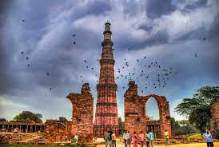

The Taj Mahal is an Islamic ivory-white marble mausoleum on the right bank of the river Yamuna in the Indian
city of Agra. It was commissioned in 1631 by the Mughal emperor Shah Jahan (1628-1658) to house the tomb of his
favourite wife, Mumtaz Mahal; it also houses the tomb of Shah Jahan himself. The tomb is the centrepiece of a
17-hectare complex, which includes a mosque and a guest house, and is set in formal gardens bounded on three
sides by a crenellated wall.
The Taj Mahal is an Islamic ivory-white marble mausoleum on the right bank of the river Yamuna in the Indian
city of Agra. It was commissioned in 1631 by the Mughal emperor Shah Jahan (1628-1658) to house the tomb of his
favourite wife, Mumtaz Mahal; it also houses the tomb of Shah Jahan himself. The tomb is the centrepiece of a
17-hectare complex, which includes a mosque and a guest house, and is set in formal gardens bounded on three
sides by a crenellated wall.

The Qutb Minar is a minaret and "victory tower" that forms part of the Qutb complex, which lies at the site of
Delhi's oldest fortified city, Lal Kot, founded by the Tomar Rajputs.It is a UNESCO World Heritage Site in the
Mehrauli area of South Delhi, India.It is one of the most visited tourist spots in the city, mostly built
between 1199 and 1220.